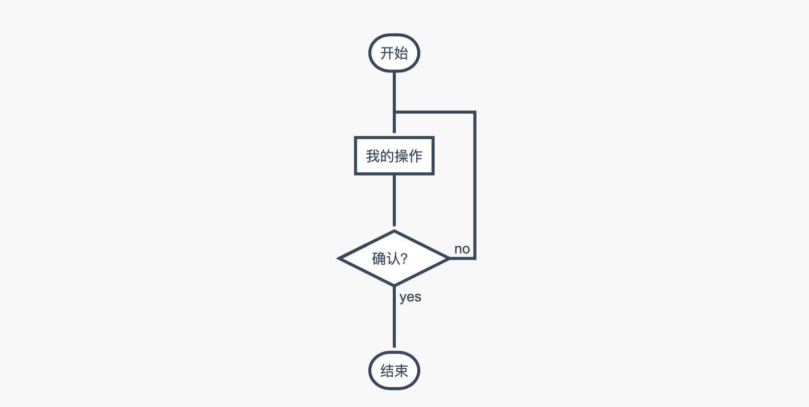
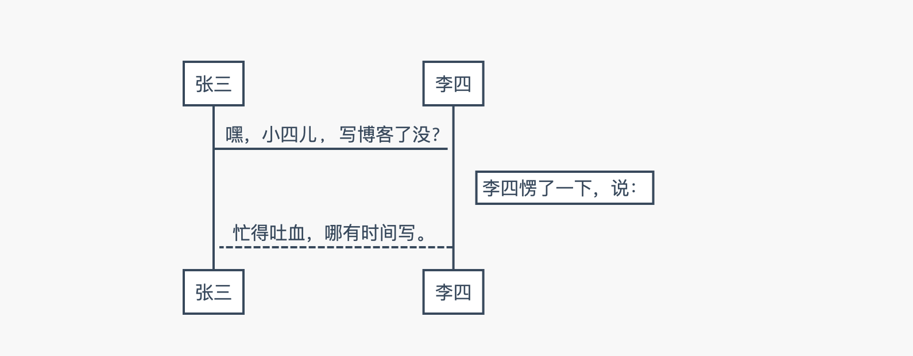
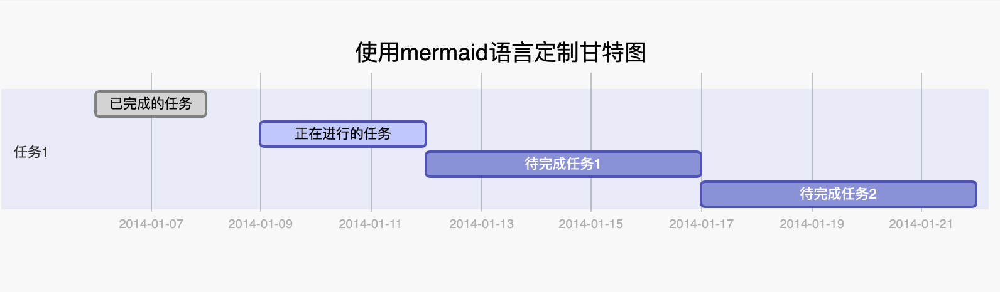

Markdown语法
随着平时的使用，持续学习和补充。
基础语法
标题
# 一级标题
## 二级标题
### 三级标题
#### 四级标题
##### 五级标题
加粗
语法
**加粗文字**
__加粗文字__
效果
加粗文字
斜体
语法
*斜体文字*
_斜体文字_
效果
斜体文字
高亮
语法
`高亮文字`
效果
高亮文字
无序列表
语法
* 项目1
* 项目2
* 子项目
- 项目1
- 项目2
- 子项目
+ 项目1
+ 项目2
+ 子项目
效果
- 项目1
- 项目2
- 子项目
有序列表
语法
1. 项目1
2. 项目2
1. 子项目
效果
- 项目1
- 项目2
- 子项目
引用
语法
> 引用内容
效果
引用内容
代码块
语法
``` java
function fancyAlert(arg) {
if(arg) {
$.facebox({div:'#foo'})
}
}
效果
function fancyAlert(arg) {
if(arg) {
$.facebox({div:'#foo'})
}
}
链接
语法
[链接文档](链接地址)
例如：[点此跳转到百度](www.baidu.com)
效果
跳转到其他页面
语法
[跳转文字](页面路径)
例如：[图床介绍](image_bed.md)
效果
图片
语法

图片地址，可以是网络地址，也可以是本地路径
例如：
效果

任务列表
语法
- [ ] 未完成任务项
- [x] 已完成任务项
效果
表格
语法
第一格表头 | 第二格表头
--------- | -------------
内容单元格 第一列第一格 | 内容单元格第二列第一格
内容单元格 第一列第二格 多加文字 | 内容单元格第二列第二格
效果
| 第一格表头 | 第二格表头 |
|---|---|
| 内容单元格 第一列第一格 | 内容单元格第二列第一格 |
| 内容单元格 第一列第二格 多加文字 | 内容单元格第二列第二格 |
删除线
语法
~~删除这些~~
效果
删除这些
分割线
语法
***
*****
- - -
效果
注脚
语法
注脚文字：[^sample_footnote]
效果
注脚文字：1
进阶语法
流程图
语法
```flow
st=>start: 开始
e=>end: 结束
op=>operation: 我的操作
cond=>condition: 确认？
st->op->cond
cond(yes)->e
cond(no)->op
```
效果

时序图
语法
```sequence
张三->李四: 嘿，小四儿, 写博客了没?
Note right of 李四: 李四愣了一下，说：
李四-->张三: 忙得吐血，哪有时间写。
```
效果

甘特图
语法
gantt
dateFormat YYYY-MM-DD
title 使用mermaid语言定制甘特图
section 任务1
已完成的任务 :done, des1, 2014-01-06,2014-01-08
正在进行的任务 :active, des2, 2014-01-09, 3d
待完成任务1 : des3, after des2, 5d
待完成任务2 : des4, after des3, 5d
效果
